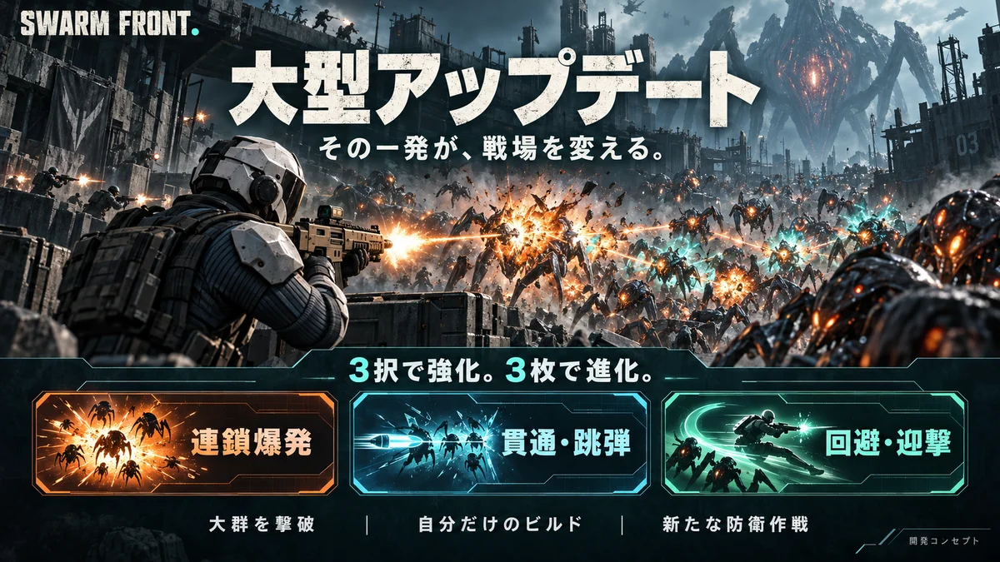
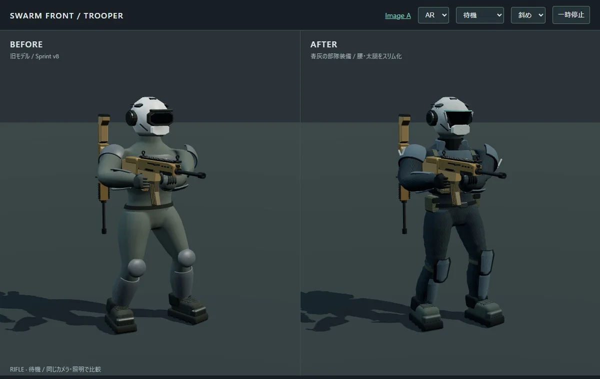
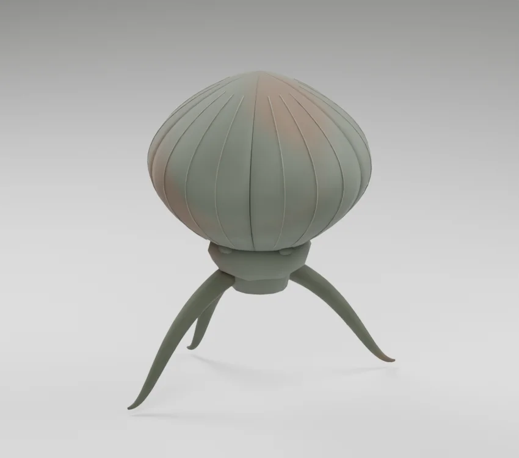
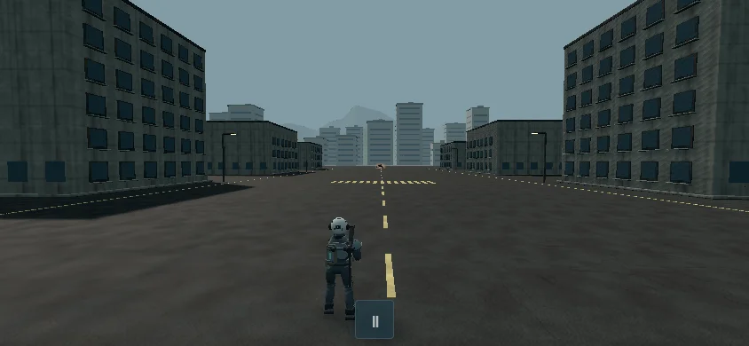
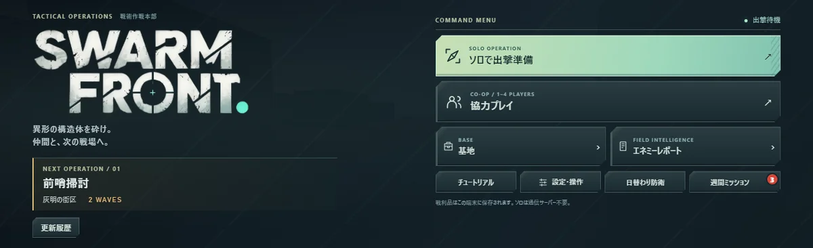

1 / 28 · 開発コンセプト / 実装前の提案
大型アップデート

共同設計v1の提案。実装前のコンセプト。手動の一発から、群れを崩す。
スワフロの次の遊び
ワシからの解説
メロニキ、今回の提案でワシが一番作りたいのは、自分で狙った一発が起点になって、敵の群れが連鎖して崩れる瞬間です。スワフロにある兵士を操作する楽しさを中心に置きながら、出撃の途中で戦い方が大きく変わる楽しさを加えます。このプレゼンでは変更点だけでなく、なぜ気持ちいいと考えるのか、今の魅力をどう守るのか、どの順番で作れば確かめられるのかまで説明します。画像は開発コンセプトで、実装済み画面ではありません。
元のスライドを見る ↗2 / 28 · 開発コンセプト / 実装前の提案
アップデートの中心
操作で切り開く
構成で強くなる
狙う敵と位置取りが、連鎖の結果を変える。
出撃中の選択が、次の戦い方を変える。
ワシからの解説
地球防衛軍とヴァンサバから取り入れたいのは、それぞれの体験の核です。巨大な脅威に兵士として立ち向かうことと、一回のプレイの中で選んだ強化が組み合わさること。この二つがつながると、撃ち勝った達成感に、自分が選んだ構成で勝った納得感が加わります。単純に敵や武器を増やすだけでは、この変化は生まれません。どこを撃つかという操作と、何を取るかという選択を、実際の発動で結び付けるのが今回の中心です。
元のスライドを見る ↗3 / 28 · 開発コンセプト / 実装前の提案
旧来の魅力を残す

既存兵士モデルの制作記録兵士を自分で動かす
手動射撃、回避、装填、武器2本の切替
敵の動きに対応する
狙う順番と位置取りで危機を抜ける
スワフロの世界を継ぐ
兵士、異形の敵、戦場、既存UIを活用
ワシからの解説
今のスワフロの価値は、自分で兵士を動かして対処できるところです。遠距離の敵を先に倒す、装填中に位置を変える、武器を切り替えて対応する。その行動が結果につながる感触を残します。既存の兵士や異形の敵、マップ、音声も、リビルドの土台になります。画面のテーマや出撃準備をまったく別物に置き換える案ではありません。これまで育てたゲームの顔を継承しながら、一回の出撃の中に成長の山場を増やす提案です。
元のスライドを見る ↗4 / 28 · 開発コンセプト / 実装前の提案
変更点と追加点
領域
戦闘
- 既存の土台
- 手動TPSと武器切替
- 今回の提案
- 操作を起点に連鎖・跳弾・迎撃を追加
成長
- 既存の土台
- 所持武器や育成の蓄積
- 今回の提案
- 出撃中に最大7回の3択を追加
山場
- 既存の土台
- 敵や大型敵との対決
- 今回の提案
- 同系統3枚の進化と圧倒区間を追加
遊び方
- 既存の土台
- 通常戦闘と日替わり防衛
- 今回の提案
- 繰り返せる作戦と防衛比較へ展開
継承
- 既存の土台
- 武器庫・セーブ・見た目
- 今回の提案
- 原本を保持し、新しい一時強化を分離
ワシからの解説
変更は五つの領域に分けると分かりやすいです。戦闘では操作を残して効果を加えます。成長では長い期間の蓄積に加えて、一回の出撃でも構成を作れるようにします。山場ではボスとの対決の前に、進化した能力を十分使える時間を用意します。遊び方は、毎日一回の機会だけに閉じず、構成を変えて繰り返せる形へ広げます。既存の武器庫やセーブは保護します。新しいモードの基礎値を標準化するのは試作案であり、持っている武器の能力を下げる変更ではありません。
元のスライドを見る ↗5 / 28 · 開発コンセプト / 実装前の提案
1出撃の流れ
時刻の目安
開始前
- プレイすること
- 武器と最初の強化を選ぶ
- 感じてほしいこと
- 今日はこの構成で行こう
最初の90秒
- プレイすること
- 早い強化と初めての連鎖
- 感じてほしいこと
- もう戦い方が変わった
2〜4分台
- プレイすること
- 精鋭に対応し、構成を伸ばす
- 感じてほしいこと
- あと1枚で完成する
4:30〜5:45
- プレイすること
- 進化した能力で群れを処理
- 感じてほしいこと
- さっき苦戦した敵が倒せる
5:45以降
- プレイすること
- 最後の補給を経て大型敵と対決
- 感じてほしいこと
- 選んだ構成で勝ち切った
ワシからの解説
時間は仮の設計値です。約7分は戦闘の目標で、選択時間やロードを含む実所要の保証ではありません。開始時に実際のカードを一枚取り、早い段階で追加の強化を体験します。中盤は精鋭への対応と構成作り、4分台には進化を狙い、その後に群れを圧倒できる時間を置きます。5分45秒の最終補給で未処理の強化権を確定し、すぐ大型敵へ移行します。ボス戦中はカード選択で中断しません。長期化した場合の試作上限は戦闘9分ですが、これも試遊で調整する値です。
元のスライドを見る ↗6 / 28 · 開発コンセプト / 実装前の提案
最初の90秒で変化を体験する
- 出撃
最初から能力を持つ
初期3択を、そのまま1枚目に数える。
- 初撃破
撃った敵が小爆発する
取得した効果と結果がすぐ結び付く。
- 追加強化
次の狙い方を試す
群れの中心や印付きの敵へ狙いを変える。
ワシからの解説
新モードの初回で、何分も普通に撃ち続けてから面白くなる構成は避けたいです。最初の選択を実カードとして扱い、初めて倒した敵から能力の違いが見えるようにします。たとえば誘爆核なら、撃破の直後に小爆発が起きます。次に導火を取ったら、印の付いた敵を狙うという新しい判断が生まれます。大事なのは説明文を理解したかだけでなく、本人が「今の強化でこれが起きた」と言えることです。XPの閾値と敵編成を一緒に調整し、早い強化が実際に間に合うかを測ります。
元のスライドを見る ↗7 / 28 · 開発コンセプト / 実装前の提案
3択に、選ぶ理由を作る
今の構成：誘爆核
導火
- 選んだ後の変化
- 印を起爆し、爆発の連携を伸ばす
- 選びたくなる状況
- まず爆発系を完成させたい
整備手順
- 選んだ後の変化
- 装填時間を短くする
- 選びたくなる状況
- 撃てない時間が苦しい
徹甲芯
- 選んだ後の変化
- 弾が抜ける対象を増やす
- 選びたくなる状況
- 射線に敵を並べて倒したい
ワシからの解説
三枚の中でいつも一番レアなものを押すだけでは、構成を作った感覚が弱くなります。この例では、誘爆核を持っている人が、爆発の完成を急ぐか、装填の苦しさを補うか、貫通を始めるかを選びます。すべてに現在の状況と結び付く理由があります。数字だけを少し増やすカードばかりにせず、発動の仕方や狙い方の変化を中心にします。同時に、未対応の武器専用カードや上限に達した能力は候補から外します。再抽選は少数回を仮置きし、選び直し自体が主な遊びにならないようにします。
元のスライドを見る ↗8 / 28 · 開発コンセプト / 実装前の提案
3枚で進化する仕組み
同じ系統を3枚
追加能力が自動解放
2枚そろったら、残り1枚を毎回候補に出す。
見送る自由を残し、完成を抽選運だけに任せない。
ワシからの解説
進化は同じ系統の三枚を集めた結果として発生します。別の進化カードを引き当てる必要はありません。二枚を持っている人には、残る三枚目を次の三択から毎回出します。ただし必ず取らせるわけではなく、危機をしのぐ汎用強化を選ぶこともできます。これで「あとは運が良ければ完成する」という不満を減らし、自分が完成を選んだという納得感を残します。進化は追加能力だけで、既存の操作や能力を失わせません。七取得の中で三枚、三枚、一枚と分ければ、三系統版では二回の進化も可能です。
元のスライドを見る ↗9 / 28 · 開発コンセプト / 実装前の提案
連鎖爆発
最初に狙う敵が、群れの崩れ方を変える
- 誘爆核
- 手動射撃で倒した敵が小爆発
- 導火
- 印を付け、次の手動命中で起爆
- 圧縮炸薬
- 連続命中で爆発を起こし、広げる
- 進化：連鎖崩落
- 印の起爆が周囲へ伝わる
自分の一発で、画面の状況が一気に変わる
ワシからの解説
最初に作るべきなのが、この爆発系です。誘爆核は手動で倒した敵を小さな爆発の起点にします。導火は印を付けて次の命中で起爆するため、どの敵を先に撃つかが重要になります。三枚そろった連鎖崩落では、印の起爆が周囲の印へ伝わります。敵が密集したところを見つけて一発を通し、広がる爆発を見届ける。ここに、自分で仕掛けた感覚と大量撃破の爽快感を重ねます。連鎖は深度や同じ対象への再発動を制限し、無限に処理が続く構造を避けます。画面上の派手さも、実際の命中や撃破に対応させます。
元のスライドを見る ↗10 / 28 · 開発コンセプト / 実装前の提案
貫通・跳弾
敵を射線に並べるほど、一発の価値が増す
- 徹甲芯
- 手動弾が通り抜ける対象を増やす
- 反射弾
- 連続命中から、別の敵へ1回跳弾
- 整列射
- 複数体を貫くと弾を1発返す
- 進化：串刺し
- 跳弾撃破が、次の手動弾を強化
位置取りと狙いの上達を、火力で実感する
ワシからの解説
貫通系は、爆発とは違う上手さを気持ちよくする構成です。敵を一直線に並べられる位置へ移動し、複数体をまとめて貫きます。整列射には弾を返す効果があるので、うまく通せた射撃が次の射撃につながります。跳弾撃破で次の手動弾が強くなる進化も、次に自分が撃つ一発の期待を作ります。最初から弱点を自動追尾する弾で全てを片付ける案は採りません。近くの別対象への一回跳弾から試します。射線を取った判断の良さが分かることを、単純なダメージの高さと同じくらい重視します。
元のスライドを見る ↗11 / 28 · 開発コンセプト / 実装前の提案
回避・迎撃
危機をしのぐ動きが、反撃の準備になる
- 残像地雷
- 回避の終点に地雷を残す
- 戦術装填
- 回避後の次の装填を短縮
- 迎撃子機
- 手動命中で準備し、装填中を援護
- 進化：反撃線
- 地雷起爆後、次の手動命中で追撃
逃げ切った直後に、自分の反撃が返ってくる
ワシからの解説
迎撃系は、回避や装填をただの待ち時間にしない構成です。敵を引きつけて回避し、終点に地雷を残す。装填を短くし、その隙に短い援護が入る。地雷が起爆した後は、自分の次の命中が追加の迎撃弾を呼びます。守る行動から攻めへ転じる気持ちよさが狙いです。一方で、回避だけを連打して勝てたり、空撃ち装填で火力を稼げたりすると射撃の意味が薄れます。地雷は最大三個、チャージは一つ、既存の回避クールダウンも守ります。常駐子機が放置で倒し続ける形は、最初の試作から外します。
元のスライドを見る ↗12 / 28 · 開発コンセプト / 実装前の提案
7回の選択で、2つの進化を狙う
取得
1
- 選ぶカードの例
- 誘爆核
- 構成の変化
- 初期カードから爆発を使う
5
- 選ぶカードの例
- 反射弾
- 構成の変化
- 別の敵への跳弾を加える
7
- 選ぶカードの例
- 整備手順
- 構成の変化
- 最後に装填の弱点を補う
ワシからの解説
この表は完成形を分かりやすくするための選択例です。まず爆発系の三枚を集めて進化し、その後は貫通系へ広げます。最後に装填を補えば、群れを崩す火力と射線を通す力を合わせ持つ構成になります。三枚目の保証があるので、二枚取ったところから完成を狙いやすくなります。ただし、最初から七回全てを保証する設計ではありません。XPが足りない場合もあれば、耐久や装填を優先して進化を見送る場合もあります。本人が状況に合わせて選び、その選択の結果が戦い方に表れることが大切です。
元のスライドを見る ↗13 / 28 · 開発コンセプト / 実装前の提案
ドーパミン要素を、プレイの瞬間へ落とす
瞬間
候補が出る
- 狙う感情
- 期待
- そのための設計
- 有効な選択と、構成を伸ばす候補
あと1枚
- 狙う感情
- 待ち遠しさ
- そのための設計
- 進化条件を見せ、3枚目を保証
初めて発動
- 狙う感情
- 納得
- そのための設計
- 選んだ効果がすぐ見える
進化する
- 狙う感情
- 達成感
- そのための設計
- 自分の選択で能力が完成
群れを倒す
- 狙う感情
- 爽快感
- そのための設計
- 成長後に圧倒できる区間
次の出撃
- 狙う感情
- 好奇心
- そのための設計
- 見送った構成を試せる
ワシからの解説
メロニキが言っていたドーパミンを出したいという方向を、設計で扱える瞬間に分けました。候補が見えた時の期待、あと一枚で完成する待ち遠しさ、最初に能力が発動した時の納得、進化した達成感、群れを倒す爽快感、別の構成を試したい好奇心です。これは神経伝達物質の分泌を測った話ではありません。プレイヤーがどう感じるかという仮説を、実際の画面と行動へ落とすための整理です。豪華な報酬を出すだけでなく、選択と結果が近い時間でつながるように作ることを重視します。
元のスライドを見る ↗14 / 28 · 開発コンセプト / 実装前の提案
「あと1枚」の期待感
2 / 3
完成が見えている
必要なカードと進化効果を表示。
次の候補に残り1枚を保証。
3 / 3
自分で完成を選ぶ
取れば、その場で追加能力を解放。
見送って別の備えをする自由も残す。
ワシからの解説
期待感を作るために、プレイヤーから情報を隠し過ぎる必要はありません。むしろ「あと何があれば完成するのか」が見える方が、自分の目標を持って戦えます。二枚まで進んだら残り一枚を保証するので、抽選が外れ続けるだけの時間を減らせます。それでも、その場で完成を選ぶか、装甲や装填を補うかという判断は残ります。ここでの気持ちよさは、ただ当たりを引いた喜びに加えて、自分が決めて完成させた喜びです。次に何を狙うかを本人が言える状態を作りたいと考えています。
元のスライドを見る ↗15 / 28 · 開発コンセプト / 実装前の提案
初発動の手応え
- 選んだ時
変化が分かる
短い効果文と進化までの枚数を見せる。
- 初命中
原因が分かる
印、爆発、跳弾の起点を明確にする。
- 倒した時
結果が返る
短い音、撃破反応、連鎖数で応える。
ワシからの解説
強化を選んでも、何が変わったか分からないと成長の手応えは薄くなります。まず選んだ時に変化を短く伝え、最初の発動でそれを確認できるようにします。爆発の起点、付いた印、跳ねた弾が見えれば、自分の操作との因果が分かります。最後に音や撃破反応が返って、行動が締まります。ここで全てを派手にすると、敵の予兆や足元の危険が消えてしまいます。自分が危険を読めることを優先し、味方のエフェクトを減らしても判定は変えません。気持ちよさと視認性はセットで確認します。
元のスライドを見る ↗16 / 28 · 開発コンセプト / 実装前の提案
強くなった実感
序盤
一体ずつ道を作る
狙う敵を決め、回避と装填を挟む。
同じ群れにも対応の時間がかかる。
進化後
群れに突破口が開く
起点の一発から連鎖が広がる。
選んだ構成が、処理の仕方を変える。
ワシからの解説
成長を実感するには、少し前の自分との比較が必要です。序盤は一体ずつ相手にしていた群れを、進化後は起点の一発から崩せる。同じような敵に対して、戦い方と処理の速さが変わることが重要です。強化を取るたびに敵のHPも同じだけ上げると、その差が感じにくくなります。そのため敵の出現計画と難易度は出撃条件で決め、取得した強化へ追従させません。進化の直後に終わらないよう、少なくとも六十秒程度操作できたかを測ります。ただし、強いプレイヤーを待たせるための無敵時間は作りません。
元のスライドを見る ↗17 / 28 · 開発コンセプト / 実装前の提案
大型敵戦に残る、操作の見せ場

既存CALYXの造形資料予兆を読む
強化が完成しても、攻撃を避ける判断は残す。
狙う順番を変える
大型と援軍のどちらを先に処理するか考える。
完成した構成で決着
選択した能力を使い、最後は自分で勝ち切る。
ワシからの解説
大型敵戦は、構成を完成させた結果を確かめる場所です。ただ火力を眺めるだけで終わると、兵士を操作する意味が弱くなります。予兆を見て避ける、援軍を先に処理する、装填に合わせて位置を変えるといった判断を残します。既存の大型敵を使うことで、素材を作り直す前に成長と操作の組合せを検証できます。画像は既存CALYXの造形資料で、アップデート後の完成映像ではありません。初回試作では大型一体に絞り、途中の中ボス戦や新しいボスの大量追加は必須にしません。
元のスライドを見る ↗18 / 28 · 開発コンセプト / 実装前の提案
もう一回を生む理由
- 別の構成
見送った能力を試す
爆発の次は、射線を通す貫通を選ぶ。
- 別の操作
上達を確かめる
敵を並べる位置、地雷を置く回避を変える。
- 別の判断
前回の弱点を補う
火力を急ぐか、装填や耐久を先に取るか。
ワシからの解説
再挑戦の理由を、報酬を受け取る義務だけに頼りたくありません。前回見送った能力、うまく使えなかった回避、足りなかった装填速度。次の出撃で試したいことが具体的に残るようにします。戦果画面では長い演出で待たせず、どんな構成になったか、どこまで進化したか、何が見せ場だったかを短く確認します。同じ装備でやり直す導線と、違う系統で始める導線を近くに置く案です。試遊では、こちらから勧めなくても再挑戦するかと、その理由を本人が言えるかを観察します。
元のスライドを見る ↗19 / 28 · 開発コンセプト / 実装前の提案
防衛に、前へ出る判断を加える

既存の戦場。防衛比較には同じ地形を使う。構成が位置取りを変える
爆発、貫通、地雷で得意な迎撃位置が変わる。
ワシからの解説
日替わり防衛を発展させるときは、拠点のそばでずっと撃つだけになるかどうかが重要です。爆発構成なら侵攻路の密集を狙い、貫通構成なら敵が並ぶ射線を取り、迎撃構成なら回避の経路へ地雷を残す。それぞれが得意な位置を持つと、前に出る判断と戻って守る判断が生まれます。ただし、これはまだ仮説です。最初は同じ地形で拠点なしの成長ループを作り、次に拠点を加えて比較します。拠点がある方が窮屈なだけなら、守る対象の位置や侵攻路の設計を見直します。
元のスライドを見る ↗20 / 28 · 開発コンセプト / 実装前の提案
通常作戦と日替わり作戦
項目
役割
- 繰り返せる迎撃作戦
- 好きな構成を試す
- 新しい日替わり作戦の案
- 普段選ばない構成を試す
条件
- 繰り返せる迎撃作戦
- 装備と選択で遊び方を変える
- 新しい日替わり作戦の案
- 地形・侵攻方向・支給系統を固定
再挑戦
- 繰り返せる迎撃作戦
- 同じ装備で何度でも試す
- 新しい日替わり作戦の案
- 挑戦回数や報酬は製品段階で決定
共通部分
- 繰り返せる迎撃作戦
- 3択・進化・手動TPS
- 新しい日替わり作戦の案
- 同じ成長と戦闘の規則を使う
既存日替わり
- 繰り返せる迎撃作戦
- 旧モードを保持して比較
- 新しい日替わり作戦の案
- 現行の180秒・参加台帳を別管理
ワシからの解説
何度でも遊べる作戦と、その日の条件を楽しむ作戦を、同じ戦闘規則の上に置く提案です。通常の迎撃作戦は自分の好みを掘り下げる場所、日替わり作戦は普段選ばない構成に触れる場所になります。日替わりだから毎日必ず参加しないと損をする、という圧力を中心にはしません。条件が変わること自体が遊ぶ理由になるかを確かめます。現在の日替わり防衛は百八十秒、一日一回、既存の武器報酬と参加台帳があります。これを試作のために上書きせず、新モードの報酬や回数は製品の判断として分けます。
元のスライドを見る ↗21 / 28 · 開発コンセプト / 実装前の提案
協力プレイの成長と選択
共有XP
成長の機会は全員へ
ラストヒットの取り合いをなくす。
候補と完成する構成は各自が選ぶ。
最大15秒
区間の合間にまとめて選ぶ
選択中は敵・弾・戦闘時計を停止。
全員の処理が終わったら即再開。
ワシからの解説
協力では、よく敵を倒せる人だけが成長し続ける偏りを避けるため、XPを部隊で共有します。全員が同じ回数の選択権を得ますが、候補と構成は個人別です。個人のレベルアップごとに全員を止めるとテンポが悪くなるので、区間の合間にまとめて選びます。敵の生成だけを止めても残った弾で被弾するため、戦闘全体を止めます。十五秒はカード一枚ごとではなく、その停止全体の上限です。期限時は表示済みの既定規則で未処理分を確定します。まず実際の二人で待ち時間を測り、成立してから四人へ広げます。
元のスライドを見る ↗22 / 28 · 開発コンセプト / 実装前の提案
UIは、判断に必要な情報を前へ

既存のタイトル・テーマを継承3枚を同じ画面で比べる
発動条件と効果、今の構成との連携を表示。
進化までの道筋を見せる
必要なカードと残り枚数を隠さない。
戦闘へ戻りやすくする
背後の戦場を見せ、再開を短く予告する。
ワシからの解説
画面を新しくする時も、スワフロの既存テーマと構成を土台にします。三択画面では短いカード名だけで判断させず、何をした時に何が起こるか、今の装備にどう効くか、進化まで何枚かを同時に見せます。長い説明を読むために上下スクロールしないと選べない状態は避けたいです。選択の背後には戦場を暗く残し、再開直後の危険を確認できるようにします。横画面八百四十四かける三百九十と、狭い六百四十かける三百六十、それに物理スマホで可読性と指の操作を確認します。
元のスライドを見る ↗23 / 28 · 開発コンセプト / 実装前の提案
既存プレイヤーの資産
対象
所持武器
- 試作での扱い
- 原本の性能とレア度を保持
- 製品化で決めること
- 持込性能かモード内標準化か
育成と収集
- 試作での扱い
- 既存の進行を変更しない
- 製品化で決めること
- 新モードでの価値の伝え方
ラン内の強化
- 試作での扱い
- 独立した一時状態で管理
- 製品化で決めること
- 新しい解放や報酬との接続
日替わり台帳
- 試作での扱い
- 旧モードの参加履歴を保護
- 製品化で決めること
- 新旧モードの入口と共存
報酬
- 試作での扱い
- 初回試作は報酬なし
- 製品化で決めること
- 既存経済を崩さない付与方法
ワシからの解説
既存プレイヤーが集めて育てたものを、リビルドのために無断で弱くしたり消したりしない方針です。試作では武器種と見た目を使い、モード内の基礎値だけをそろえます。そうする理由は、進行度の差よりカード構成の違いを比べやすくするためです。所持品の原本を書き換える意味ではありません。製品化の時には、持っている武器の性能をどこまで活かすか、収集価値をどうつなぐかを改めて決めます。初回から新モードで武器を大量配布すると既存の経済へ影響するため、楽しさの試作には報酬を接続しません。
元のスライドを見る ↗24 / 28 · 開発コンセプト / 実装前の提案
気持ちよさを壊しやすい問題
起こりうる問題
支援だけで倒せる
- プレイヤーへの影響
- 狙って撃つ意味が薄くなる
- 設計での対処
- 命中・回避など手動行動を起点にする
カードが来ない
- プレイヤーへの影響
- 完成を狙った選択が報われない
- 設計での対処
- 同系統2枚で3枚目を提示保証
進化直後に終了
- プレイヤーへの影響
- 完成した構成を楽しめない
- 設計での対処
- 進化後の操作時間を測る
演出で危険が隠れる
- プレイヤーへの影響
- 被弾の理由が分からない
- 設計での対処
- 予兆と照準を視覚的に優先
毎回選択を待つ
- プレイヤーへの影響
- 協力のテンポが途切れる
- 設計での対処
- 区間でまとめ、累計停止を測る
ワシからの解説
盛り上がる要素を増やすほど、別の楽しさを壊すこともあります。自動支援を強くし過ぎると操作の価値が落ち、演出を派手にし過ぎると危険が読めなくなります。進化が存在しても使う前に終われば、期待だけで終わってしまいます。ここでは問題を後から感想として受け取るだけでなく、試す前に見る項目を決めています。特に協力の十五秒は、六回待てば九十秒にもなります。短い作戦の中では大きい時間です。上限を設定しただけで解決したとは考えず、人間が感じる待ちと実際の停止時間を両方確認します。
元のスライドを見る ↗25 / 28 · 開発コンセプト / 実装前の提案
制作は、快感の核から広げる
段階
P1a
- 作るもの
- 爆発3枚＋汎用3種＋進化1
- 次へ進む理由
- 一発から群れが崩れる手応え
P1b
- 作るもの
- 3系統＋進化3種類を実装
- 次へ進む理由
- 別の構成で遊び直したくなる
P2
- 作るもの
- 同じ地形で防衛を追加
- 次へ進む理由
- 守る判断が面白さを増やす
P3
- 作るもの
- 実2人、その後4人
- 次へ進む理由
- 待ち時間と同期が成立する
P4
- 作るもの
- 報酬・解放・既存進行を接続
- 次へ進む理由
- 既存の価値を保って製品にする
ワシからの解説
ワシのおすすめは、この順番です。まず一面、一兵士、対応する武器一タイプ、爆発系で、狙った一発の快感を作ります。汎用三種類は各四段階にして、後半でも有効な候補を残します。そこが良くなったら三構成へ広げ、選択する面白さを確認します。次に防衛を加え、守る対象があることで判断が増えるかを比較します。その後、実際の二人で協力を検証し、四人へ拡張します。報酬と既存進行は最後です。最初から地形破壊や建築や新兵科まで作ると、核の体験が弱かった時に直す範囲が大きくなります。
元のスライドを見る ↗26 / 28 · 開発コンセプト / 実装前の提案
試遊で確かめること
問い
変化が分かるか
- 見る・聞くこと
- 1分後に能力の違いを説明してもらう
- 見直す兆候
- 数値欄を見ないと分からない
自分で仕掛けたか
- 見る・聞くこと
- 狙う敵や位置を変えた理由を聞く
- 見直す兆候
- どこを撃っても同じ
完成を味わえたか
- 見る・聞くこと
- 進化から終了までの操作時間
- 見直す兆候
- 進化直後の終了が続く
もう一回したいか
- 見る・聞くこと
- 自発的な再挑戦と、その理由
- 見直す兆候
- 報酬だけが動機になる
協力で疲れないか
- 見る・聞くこと
- 停止合計、最後の人を待つ時間
- 見直す兆候
- 毎回待ちが長いと感じる
ワシからの解説
設計書が整っていても、面白さは実装して人間が触らないと分かりません。最初の一分で何が変わったか、狙い方を変えた理由は何か、次にどの構成を試したいかを本人の言葉で聞きます。自動プレイの勝率だけでは、この問いに答えられません。進化後に操作できた時間や協力中の待ち時間も記録します。初回は五人前後で方向を確認する案ですが、その意見を統計的な普遍性とは扱いません。候補数の列挙検証はできていても、抽選の手触り、戦闘バランス、スマホの熱や描画性能は別の検証です。
元のスライドを見る ↗27 / 28 · 開発コンセプト / 実装前の提案
アプデ後に増やしたい魅力
旧来の魅力
兵士として戦場を切り抜ける
「狙いが通った」
「危ない攻撃を避けた」
「この武器で対処できた」
加わる魅力
自分の選択で戦い方が育つ
「この組合せがつながった」
「一発で群れを崩した」
「次は別の構成を試したい」
ワシからの解説
アップデート後に感じてほしい魅力を、最後に言葉にします。今のスワフロが持つ、狙いが通った、危険を避けた、この武器で対処できたという感覚。その上に、この組合せがつながった、一発で群れを崩せた、次は別の構成を試したいという感覚を加えます。操作が上手くなった喜びと、構成を作る判断がうまくいった喜びを、一回の出撃で両方味わえるのが狙いです。どちらかが消えてしまうなら、リビルドの方向を見直します。派手さだけではなく、自分の操作と選択で起きたという納得が中心です。
元のスライドを見る ↗28 / 28 · 開発コンセプト / 実装前の提案
次のアクション
まず、爆発1系統を
遊べる形にする
誘爆核、導火、圧縮炸薬、連鎖崩落。
最初の1分で違いが分かり、
完成後に群れを崩す瞬間を確かめる。
ワシからの解説
メロニキへのワシの提案は、まず爆発一系統の試作へ進むことです。誘爆核で最初の違いを感じ、導火で狙う相手を変え、圧縮炸薬をそろえて連鎖崩落を起こす。この一連の流れが気持ちよければ、今回の大型アップデートの核になります。初回は既存の一面と兵士を活用し、報酬を接続せず、元の武器やセーブを保持します。そこで感じた手応えを基に貫通と迎撃を加え、防衛、協力へ広げます。今ここで決めたいのは全機能の一括実装ではなく、この核を確かめる小さい試作を次の制作対象にすることです。
元のスライドを見る ↗